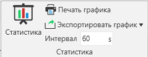
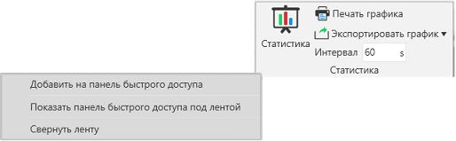
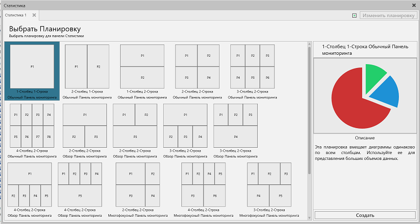
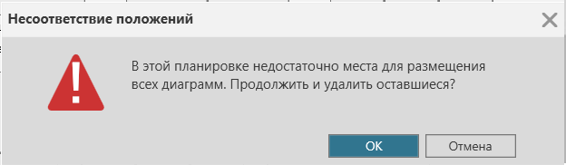
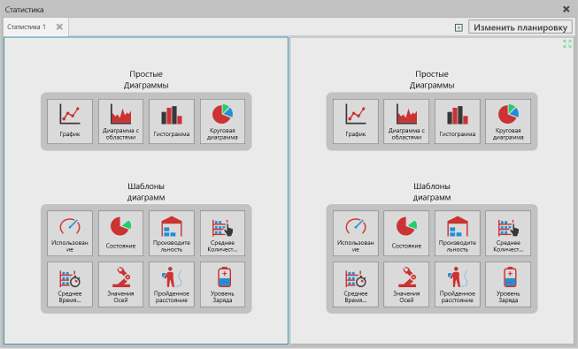
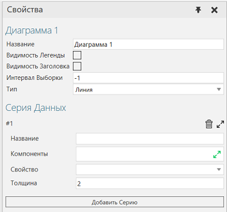
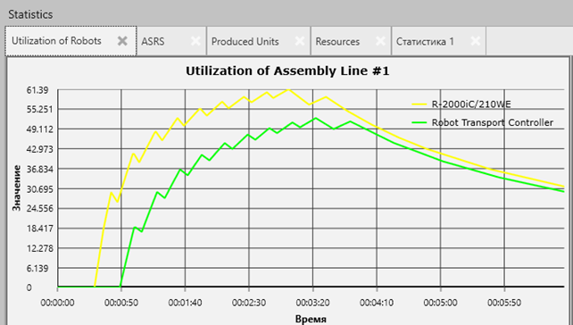

Панель Мониторинга статистики позволяет создавать отчеты по статистике, собранной с компонентов во время симуляции.

Откройте панель Статистика
Группа Статистика содержит наиболее часто используемые команды для работы со статистикой.

Статистика открывает панель Статистика.
Печать графика позволяет распечатать один или все графики в виде документа.
Экспорт графика позволяет экспортировать все графики в файл Excel или CSV. В файле Excel каждый график будет сгруппирован на отдельном листе, например, 1 файл для двух графиков. CSV-файл будет создан для каждого графика, например, 2 файла для двух графиков.
Интервал определяет глобальную частоту выборки для отчетов о свойствах поведения Statistics. Сюда входит кумулятивная, интервальная и основанная на состояниях статистика. По умолчанию во время моделирования данные обновляются каждые 60 секунд.
По умолчанию на вкладке Главная на ленте отображается группа Статистика. Чтобы получить доступ к группе Статистика в других контекстах, можно добавить всю группу или ее команды на панель инструментов быстрого доступа.

Выберите Планировку
Приборная панель Статистика разделяет содержимое на отдельные вкладки. На каждой вкладке используется макет и система сетки для организации графиков по столбцам и строкам.

По умолчанию на пустой вкладке отображается представление для выбора планировки. Планировка определяет, сколько графиков и где они будут размещены в окне просмотра данной вкладки.
1.Выберите планировку. При этом на боковой панели отображается предварительный просмотр планировки.
2.Сделайте одно из следующих действий:
·Дважды щелкните по планировке.
·На боковой панели нажмите кнопку Создать.
3.Если вам нужно изменить планировку, нажмите Изменить Планировку, а затем повторите шаги 1 и 2.
Примечание: Изменение планировки не приведет к удалению диаграмм, если только вы не перейдете на планировку с меньшим количеством элементов отображения.

Выберите Диаграмму
По умолчанию на месте, где нет графика, отображаются опции для добавления графика. Вы можете либо создать новый график с нуля, либо использовать шаблон. Если вы хотите использовать шаблон, сначала необходимо выбрать компонент в 3D-мире. Как правило, выбранный компонент должен иметь поведение Статистики или быть типом компонента с требованиями шаблона.

Редактирование Свойств Диаграмм
Диаграмма отображает серию данных или значения свойства компонента. Серия данных может содержать данные из нескольких компонентов, имеющих общее свойство. График может отображать более одного ряда данных и иметь собственный интервал выборки. Интервал выборки определяет, как часто значение серии данных отображается на графике. По умолчанию все графики используют глобальный интервал выборки.

Диаграмма содержит следующие свойства.
·Название - Определяет название графика.
·Видимость легенды - Отображает легенду графика и его серию данных.
·Видимость заголовка - Отображает заголовок графика.
·Интервал выборки - Определяет интервал выборки графика для построения его рядов данных. Значение -1 означает, что график использует глобальный интервал выборки.
·Тип- Определяет тип графика.
·Серия данных - Набор свойств для добавления и редактирования серий данных на графике.
·Добавить серию - Создает новую серию данных.
·Индекс - Указывает порядок расположения серий данных в графике с дополнительными опциями для удаления, сворачивания и разворачивания серий данных.
·Название - Задает название серии данных.
·Компоненты - Определяет список одного или нескольких компонентов в трехмерном мире, на которые ссылается серия данных.
·Свойство - Определяет, какое свойство в списке компонентов, значение которого сообщается серией данных.
·Толщина - Определяет толщину отображения серии данных на графике.
Данные Графика
График будет строить данные при запуске моделирования на основе интервала выборки. При сбросе и запуске нового моделирования данные предыдущего моделирования будут удалены со всех графиков на панели Статистика.

Примечание: Диаграмма - это элемент планировки, поэтому диаграммы могут быть сохранены вместе с планировкой. К ним не относятся данные, отображаемые на графике.
Просмотр Данных
Вы можете читать, увеличивать или уменьшать масштаб, панорамировать и фокусироваться на данных, отображаемых на диаграмме. Эти действия, конечно же, зависят от типа диаграммы.
Печать Графика
Вы можете распечатать любую диаграмму на панели статистики.
1.Откройте панель Мониторинга статистики.
2.Сделайте одно из следующих действий:
·Если вы хотите распечатать один график, выберите этот график.
·Если вы хотите распечатать все графики на вкладке, выберите эту вкладку.
3.Сделайте одно из следующих действий:
·На вкладке Главная в группе Статистика нажмите Печать графика.
·Перейдите на вкладку Файл, чтобы вернуться на backstage, затем нажмите Печать, а затем нажмите Таблица Статистики.
4.Внесите необходимые изменения в настройки печати, а затем сделайте одно из следующих действий:
·Чтобы распечатать файл, нажмите Печать.
·Чтобы экспортировать файл в формате XPS, нажмите Экспорт в XPS.
Экспорт Данных
Данные, отображаемые на графиках, можно экспортировать в файл Excel или CSV.
1.Откройте панель Мониторинга статистики.
2.На панели Мониторинга статистики выберите вкладку, содержащую данные, которые вы хотите экспортировать в файл.
3.На вкладке Главная в группе Статистика нажмите Экспортировать график а затем сделайте одно из следующих действий:
·Чтобы экспортировать данные в файл Excel, нажмите Экспорт в Excel. Данные каждого графика будут храниться на отдельном листе в файле Excel.
·Чтобы экспортировать данные в CSV-файл, нажмите Экспорт в CSV. Данные каждого графика будут сохранены в отдельном CSV-файле.